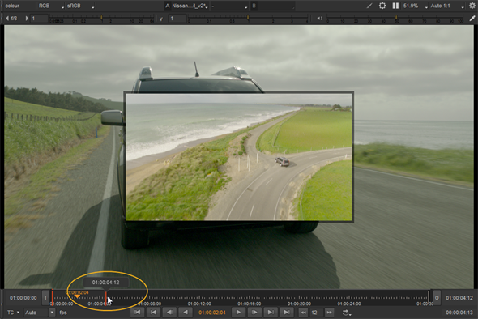
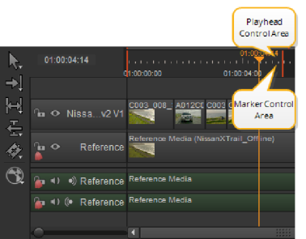

输入和输出标记使您可以将剪辑的持续时间更改为所需的源部分。
将包含入点和出点的剪辑添加到时间轴时，可以将剪辑滑过标记以调整剪辑的输出。请参阅 时间线编辑工具 欲了解更多信息。
还可以使用 “入” 和 “出” 点导出剪辑或序列的某些部分。请参阅 转码 欲了解更多信息。
要设置输入和输出标记:
| 1。 | 右键单击所需的剪辑或序列，然后选择 打开 > 时间线视图 . |
时间线中打开的剪辑在时间线中有紫色背景。
| 2. | 将播放头移动到输入点的位置，然后按 我 在键盘上。 |
In 点由 In 选项卡标记，时间记录在回放控件中。
| 3. | 将播放头移动到输出点的位置，然后按 O 在键盘上。 |
Out 点由 Out 选项卡标记，时间记录在回放控件中。
注意: 您也可以通过导航到来设置标记 视图 > 马克 在 或 马克 出去 ,通过使用 时间线 菜单到 马克 选择 或 马克 剪辑 依赖于时间轴上的剪辑选择，或者通过右击剪辑实例并选择 打开 > 观众 .
单击并拖动标记以调整其位置，或按住 Ctrl / Cmd 同时移动两个标记，保留它们的相对位置。查看器预览显示选定标记的当前帧，时间码/帧弹出有助于设置新位置。

通过导航到清除剪辑中的标记 视图 > 清除 在点 (Alt I) 和 清除 点 (Alt O)。标记被完全删除，但是你可以通过重新定位播放头并按下来重新应用它们 我 或 O .
提示: 你也可以按 Alt U 同时删除两个标记。
当播放头靠近输入和输出标记时，时间码比例的上半部分控制播放头，下半部分控制标记。

|
|